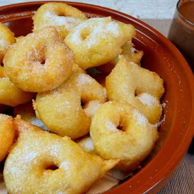

Postre de la Semana
Boniatos a la mallorquina
Comensales: 4 personas
Tiempo de preparacion: 15 minutos
Tiempo de coccion: 25 minutos
Ingredientes:
- 1Kg boniatos
- 1/4 litro de miel
- Abundante aceite
Preparacion:
- Mondar los biniatos
- ortarlos en rodajas de medio centimetro
-
Freirlos en aceite abundante,poco a poco,para que queden bien cocidos
- Retirarlos cuando esten dorados
-
servirlos untados por una cara con miel y colocarlos en bandeja con
servilletas
